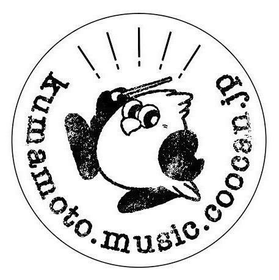
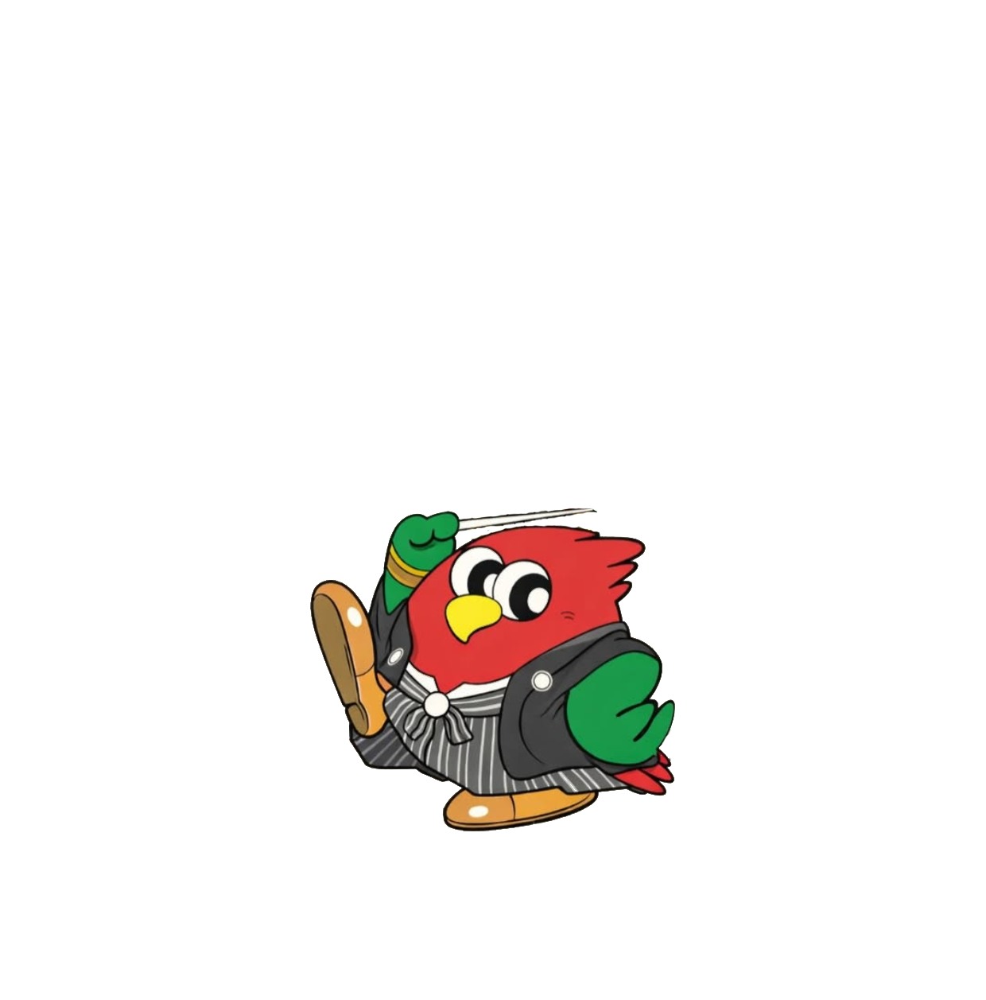

熊本市民吹奏楽団
Kumamoto simin music
ホーム
楽団について
指揮者
活動予定
演奏記録
団員募集
お問い合わせ
ホーム
楽団について
指揮者
活動予定
演奏記録
団員募集
お問い合わせ
Join
入団希望のお問い合わせ
お名前
*
希望楽器
*
選択してください
ピッコロ
フルート
オーボエ
クラリネット
バスクラリネット
ファゴット
アルトサックス
テナーサックス
バリトンサックス
トランペット
ホルン
トロンボーン
ユーフォニアム
チューバ
パーカッション
その他
楽器経験年
*
本文
*
送信する
お問い合わせに戻る
